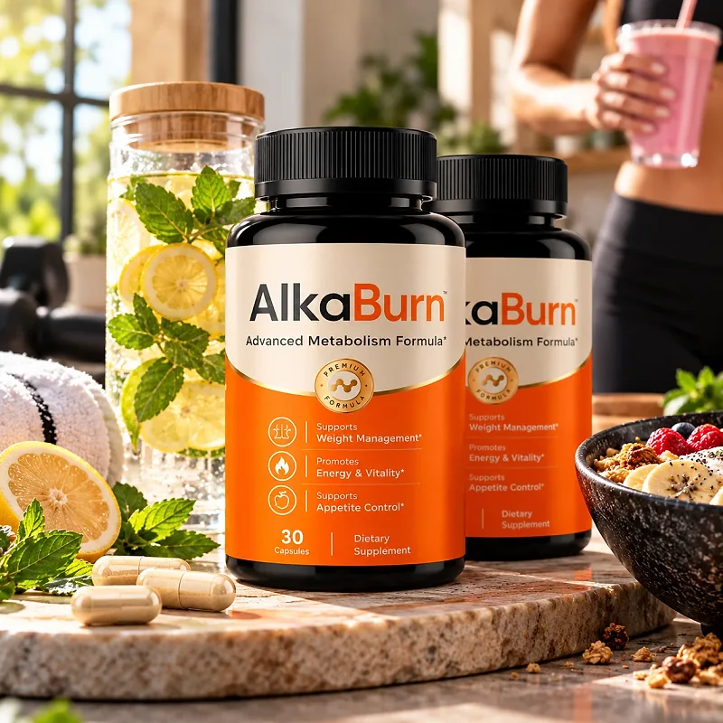
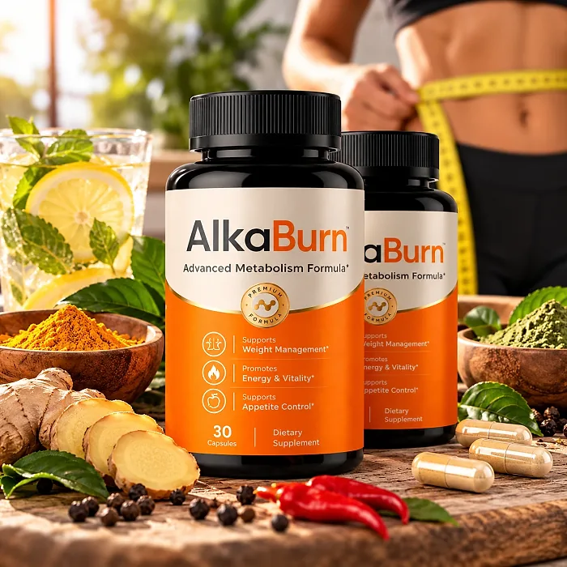
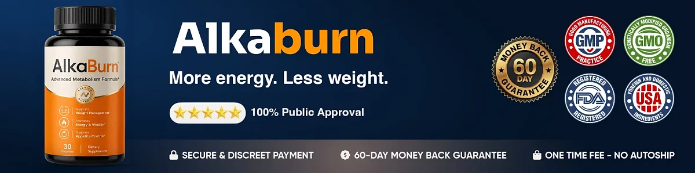

What Is AlkaBurn And How Does It Work?
AlkaBurn is a dietary supplement in vegetable capsules designed to support weight management, energy and vitality, and appetite control for adults who feel that constant hunger, afternoon slumps, and a slower metabolism keep getting in the way of their goals, and who want a simple routine of one capsule a day.
The label calls it an "Advanced Metabolism Formula," and the Supplement Facts panel lists five active ingredients with their exact amounts: Green Coffee Bean Extract, Raspberry Ketone, Garcinia Cambogia Extract, Caffeine Anhydrous, and Green Tea Extract. Those three goals, weight management, energy and vitality, and appetite control, are printed on the front of the bottle.
The idea behind the formula is a classic thermogenic pairing. Caffeine and green tea are there for alertness and energy expenditure, while garcinia and raspberry ketone are added for satiety and fewer cravings, and green coffee bean extract brings chlorogenic acids, which are studied for how the body handles carbohydrates. According to the official FAQ, the formula works on two fronts: energy from the body's own reserves and a natural feeling of fullness that helps with sugar cravings.
Rather than acting as an overnight fix, AlkaBurn is meant to be used every day for several months, and the official FAQ says most customers choose a six-month supply so the ingredients have time to work consistently.
With consistent daily use, the customers quoted on the official website describe more energy, better control over their weight, and more confidence, especially when the capsule is combined with balanced meals, enough water, good sleep, and regular movement.
From a practical standpoint, AlkaBurn is one capsule a day, 20 to 30 minutes before a meal, with 8 oz of water, and each bottle holds 30 capsules, a one-month supply.
According to the label, AlkaBurn is manufactured in the USA with globally sourced ingredients, and the official FAQ says it is produced in a GMP-certified facility. Because each capsule has 138 mg of caffeine, it is a stimulant formula, which matters for anyone who already drinks a lot of coffee.
AlkaBurn Ingredients
Each capsule of AlkaBurn lists five active ingredients on the Supplement Facts panel, and unlike many weight formulas, every one of them shows its exact amount. These are the ingredients, chosen to support metabolism, energy, and appetite control:
Green Coffee Bean Extract (130 mg, 50% chlorogenic acids): Unroasted coffee beans keep more of their chlorogenic acids, compounds studied for how the body absorbs and uses carbohydrates.
Raspberry Ketone (130 mg): The aromatic compound of red raspberries, included to support the breakdown of stored fat as part of the metabolic blend.
Garcinia Cambogia Extract (130 mg, 50% HCA): A tropical fruit rich in hydroxycitric acid, traditionally used to increase the feeling of fullness and reduce cravings between meals.
Caffeine Anhydrous (138 mg): A dry form of caffeine that supports alertness, energy, and calorie expenditure; the amount is close to one and a half cups of brewed coffee.
Green Tea Extract (130 mg, 98% polyphenols, 75% catechins, 45% EGCG): A concentrated source of catechins with antioxidant and thermogenic activity, standardized to less than 3% caffeine.
The other ingredients are rice flour, hypromellose (the vegetable capsule), magnesium stearate, and silicon dioxide. This combination of caffeine, green tea, green coffee, garcinia, and raspberry ketone is a well-known type of thermogenic blend, so its strength lies in the clear dosing on the label rather than in a secret recipe.
AlkaBurn is designed for daily use, offering a simple, non-prescription approach to weight management for adults who tolerate caffeine well.
AlkaBurn Side Effects
AlkaBurn is generally well tolerated by healthy adults who are used to caffeine, and it is intended for people who want a simple, once-a-day approach to weight management instead of complicated routines.
According to the official FAQ, the capsules are produced in the United States in a GMP-certified facility, with natural ingredients tested for quality, and the label says the product is manufactured in the USA with globally sourced ingredients.
There are no widespread reports of serious side effects, but each capsule has 138 mg of caffeine, so the most likely issues are the usual ones for stimulants: jitters, a faster heartbeat, an upset stomach, or trouble sleeping if it is taken late in the day. People who are sensitive to stimulants, who have high blood pressure or heart conditions, or who take medication for blood pressure, blood sugar, anxiety, or blood thinning should show the label to their doctor first. It is wise to limit coffee, energy drinks, and other caffeine sources while using it. It is not intended to diagnose, treat, cure, or prevent any disease, and individual results may vary.
The official FAQ itself recommends that pregnant or nursing women, people under 18, and anyone with a known medical condition, especially sensitivity to stimulants or high blood pressure, consult a physician before using AlkaBurn.
AlkaBurn Dosage
According to the label and the official FAQ, the recommended way to take AlkaBurn is 1 capsule daily, 20 to 30 minutes before a meal, with 8 oz of water.
Formulated as an easy daily capsule, it requires no powders to mix and nothing to measure. Because of the caffeine, taking it before breakfast or lunch, rather than in the evening, helps protect your sleep.
For best results, consistency is key. Each bottle holds 30 capsules, one month of use, and the official FAQ says most customers choose a six-month supply, the period it considers ideal for ingredients like green coffee bean and green tea to support metabolic health consistently.
Healthy habits make a real difference: protein and fiber at each meal, enough water through the day, less sugar and alcohol, regular walks or exercise, and seven to eight hours of sleep. Keeping a simple log of energy, appetite, and measurements every few weeks is an easy way to see whether the routine is working for you.
As with any dietary supplement, do not exceed the recommended dose of one capsule a day. AlkaBurn works best when used regularly, combined with healthy daily habits.
AlkaBurn – Refund Policy
AlkaBurn is backed by a 60-day money-back guarantee, which, according to the official website, counts from the date of purchase and is meant to give buyers two months to try the capsules.
The refund rules on the official FAQ page add some conditions that are worth reading before ordering: the minimum trial period is 30 days, the return must start within 60 days of the purchase date, only sealed bottles are eligible for a refund, shipping and customs fees are not refunded, the return shipping is paid by the customer, and a 20% restocking fee is deducted from the total.
How to request a refund: Email contact@customercs.com to request a return authorization code, with "Refund Request" in the subject line, and follow the instructions of the support team. The separate returns page counts the 60 days from the delivery date, so asking support to confirm the deadline is a good idea.
Customer Support Contact Information: contact@customercs.com, SMS support at +1 (855) 889-3137 as listed on the contact page, or +1 (507) 448-8190 as printed on the label. The FAQ says emails are usually answered within 48 business hours.
Refund Processing Time: Once the returned items are received and verified, the refund goes back to the original payment method and may take 5 to 10 business days to appear on your statement, depending on your bank.
The rules are published openly, but the restocking fee and the sealed-bottle condition make the guarantee narrower than it first sounds, so it is worth keeping the order email and the tracking number.
AlkaBurn Customer Reviews
-
Michael Thompson — Houston, TexasVerified Purchase – 6 Bottles
“I struggled with excess weight for years, which really affected my self-esteem. After using AlkaBurn for 3 months, I am now able to lose weight and keep my body in shape. It has revitalized my life and given me a new confidence.”
-
Sarah Rodriguez — Chicago, IllinoisVerified Purchase – 6 Bottles
“... I often struggled with losing weight... AlkaBurn has been a game-changer for me. After just 1 month of use, I noticed significant improvements in my metabolism and overall health. I feel like I’ve regained my energy!”
-
Lauren Rio — Seattle, WashingtonVerified Purchase – 6 Bottles
“After menopause, I experienced severe weight gain and struggled to shed it. I thought my days of having a healthy body were over until I discovered AlkaBurn. After using it for 2 months, I’m now able to enjoy an active life and feel good about myself again. It has truly been a life-changing product.”
AlkaBurn – Where To Buy
AlkaBurn is sold through its official website, so if you decide to try it, it's important to be careful about where you purchase it. The official website is the only sales channel the manufacturer lists, and it does not point to marketplaces such as Amazon, eBay, or Walmart.
Listings on third-party platforms may look similar but cannot be verified as authentic, raising concerns about safety, quality, and ingredient freshness — a real concern for a formula with a stimulant like caffeine. Products purchased outside the official source may not be covered by the 60-day guarantee.
For this reason, most customers recommend purchasing AlkaBurn only through the official website. Buying directly from the official source ensures you receive the authentic original product, made in the USA, with access to customer support and the full guarantee. According to the official website, every purchase is a one-time order, with no automatic renewals, hidden fees, or surprise charges.
To avoid counterfeit batches and ensure maximum quality, always verify that you are ordering from the official AlkaBurn website before completing your purchase.
To ensure you’re getting the authentic product, most users choose to visit the official website.
Is AlkaBurn A Scam?
Going by what the official website shows, AlkaBurn does not look like a scam. It is a real capsule supplement with a complete Supplement Facts panel, exact amounts for every active ingredient, a distributor named on the label (Instituto Experience, PO Box 12730, Ogden, Utah), a support email and phone lines, and written refund rules.
There are, however, a few inconsistencies worth knowing. The sales page says the formula acts on gut bacteria, but the label lists no probiotics or fibers, only a caffeine-based thermogenic blend, so the label is the reference here. The returns page carries the name of another company and counts the guarantee from delivery, while the FAQ counts it from purchase. And the refund rules ask for at least 30 days of use but accept only sealed bottles, with a 20% restocking fee.
None of this means the product is bad, but it is a good reason to read the refund rules before ordering and to confirm the details with support.
Customers quoted on the official website describe more energy, better weight control, and more confidence. Expectations should stay realistic: results vary from person to person, the caffeine does not suit everyone, and no supplement replaces a balanced diet, exercise, or medical care.
AlkaBurn is backed by a 60-day money-back guarantee, and the official FAQ says every order is a one-time payment, with no automatic renewals or hidden fees.
For adults who tolerate caffeine and want a simple daily capsule to support metabolism, energy, and appetite control, AlkaBurn is worth considering — ideally bought from the official website.
For those who want to verify product details or check current availability, the official AlkaBurn website remains the safest option.

Check Availability On Official Website
